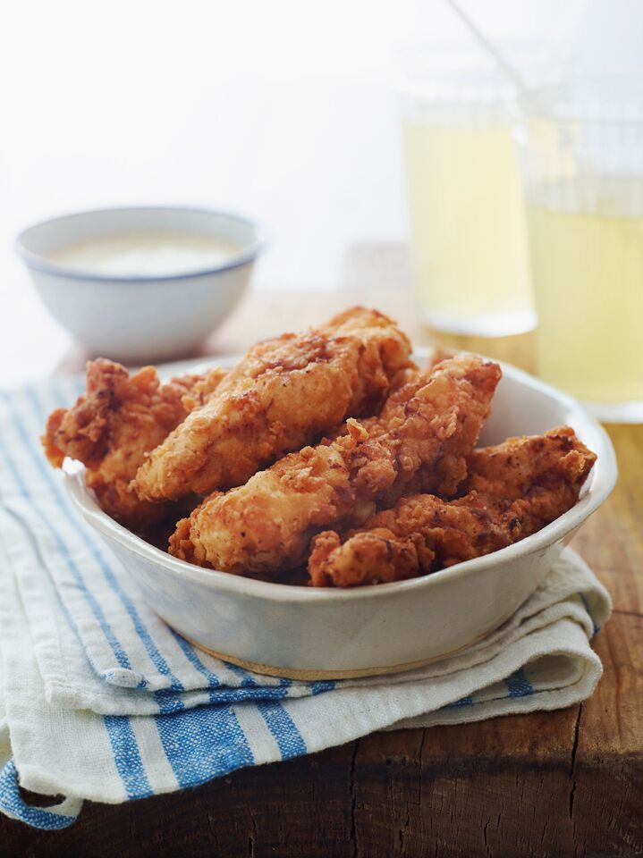

Buttermilk chicken recipe

This is a simple recipe for a quick and delicious buttermilk chicken to cook up for dinner
Ingredients:
- Chicken
- seasoning
- buttermilk
- flour
- peanut oil
Steps:
- Toss the chicken in seasoning, marinate in buttermilk overnight
- Make the seasoned flour
- Dredge each buttermilk-soaked chicken piece in flour and transfer to a plate
- Fry the chicken until 165 degrees Farenheit
- Drain and cool over a cooling rack or a paper towel